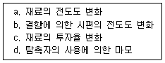
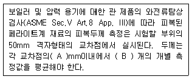

와전류비파괴검사기사 (2016-05-08 기출문제)
1과목: 비파괴검사 개론
1. 방사선투과시험과 비교하여 초음파탐상시험의 장점을 설명한 것으로 옳은 것은?
- 한 면만으로도 탐상이 가능하다.
- 시험체의 표면이 거친 경우에 유리하다.
- 탐상을 위한 접촉매질이 필요하지 않다.
- 탐상의 기준이 되는 표준시험편이나 대비시험편이 필요하지 않다.
(정답률: 80%)

2. 다음 중 와전류탐상검사의 장점이 아닌 것은?
- 표면 아래 깊은 곳에 위치한 결함의 검출에 용이하다.
- 시험 속도가 크고, 자동화가 가능하다.
- 결함 크기, 재질 변화 등을 동시에 검사 하는 것이 가능하다.
- 관, 선, 환봉 등에 대해 비접촉으로 검사가 가능하다.
(정답률: 80%)
3. 시험체 내부를 통과하는 방사선의 투과량이 다른 것을 이용하여 시험체 내부 불균일을 검사할 때 사용하는 것은?
- α선
- β선
- 자외선
- 중성자선
(정답률: 72%)
4. 다음 중 비파괴검사법과 원리의 연결이 틀린 것은?
- 방사선투과시험 - 결함에 의한 투과강도의 차이
- 초음파탐상시험 - 결함에 의한 반사 에코
- 자분탐상시험 - 결함에 의한 누설 자속
- 침투탐상시험 - 결함에 의한 표피효과
(정답률: 94%)
5. 동일 조건에서 모세관의 반지름이 2배로 늘어나면 모세관 속 액체의 높이는 어떻게 되는가?
- 1/4로 낮아진다.
- 1/2로 낮아진다.
- 2배로 높아진다.
- 4배로 높아진다.
(정답률: 79%)
6. 금속침투법에서 세라다이징법은 어떤 금속을 침투시키는 방법인가?
- B
- Zn
- Al
- Cr
(정답률: 75%)
7. 스테인리스강 공식을 방지하기 위한 대책으로 옳은 것은?
- 공기와의 접촉을 많게 하여 부식이 발생하게 한다.
- 할로겐 이온의 고농도의 것을 사용한다.
- 산소농담전지를 형성하여 부식생성물을 만든다.
- 재료 중의 C 를 적게 하거나 Ni, Cr, Mo 등의 성분을 많게 한다.
(정답률: 80%)
8. 로우 엑스(Lo-Ex)합금에 대하여 설명한 것 중 틀린 것은?
- 고온강도가 크다.
- 내마모성이 좋다.
- 피스톤 재료로 사용한다.
- 주로 단조 가공하여 사용한다.
(정답률: 65%)
9. 구리의 성질에 대한 설명 중 틀린 것은?
- 전연성이 좋아 가공이 용이하다.
- 전기 및 열의 전도성이 우수하다.
- 화학적 저항력이 작아서 부식이 심하다.
- Zn, Sn, Ni 등과 용이하게 합금을 만든다.
(정답률: 73%)
10. 피로한도에 대한 설명으로 옳은 것은?
- 지름이 크면 피로한도는 커진다.
- 노치가 있는 시험편의 피로한도는 크다.
- 표면이 거친 것이 고운 것보다 피로한도가 작다
- 시험편이 산, 알칼리, 물에서는 부식되어 피로한도가 커진다.
(정답률: 65%)
11. 산소나 탈산제를 품지 않는 구리로 전도성이 좋고, 수소취성이 없으며, 가공성도 우수하여 주로 전자기기 등에 사용되는 사판동은?
- 탈산동
- 정련동
- 전기동
- 무산소동
(정답률: 72%)
12. 스프링강에서 담금질성을 높이고 탄성한도를 향상시키는 원소는?
- S
- W
- Mo
- Si
(정답률: 75%)
13. 바이트 재료로 사용되는 소결합금은?
- 저탄소강
- 탄소공구강
- 세라믹 공구
- 기계구조용강
(정답률: 62%)
14. 니켈- 크롬강에 담금질성을 향상시켜 200mm까지도 담금질이 가능하게 하여 사용하는 기계구조용 저합금강을 만들기 위해 첨가하는 원소로서, 이 원소를 첨가하면 뜨임연화저항이 크므로 높은 온도까지 뜨임할 수 있다. 다른 합금강에 비하여 최고의 강인성을 나타내기 위해 첨가하는 원소는?
- B
- Mn
- Cu
- Mo
(정답률: 62%)
15. Y 합금에 대한 설명 중 틀린 것은?
- 표준 조성은 Al - 4%Cu - 2%Ni - 1.5Mg이다.
- 내열성 알루미늄합금으로 실린더 헤드로 사용된다.
- 인공시효는 230~240℃에서 5 ~ 8hr 정도 가열한다.
- 적정 온도보다 지나치게 높은 온도에서 시효처리 하면 과시효가 발생하여 강도를 높인다.
(정답률: 69%)
16. 용접 홈 설계 시 고려 해야할 사항으로 틀린 것은?
- 홈의 단면적은 가능한 크게 한다.
- 루트 반지름은 가능한 크게 한다.
- 루트간격의 최대치는 사용 용접봉의 지름 이하로 한다.
- 적당한 루트 간격과 루트면을 만들어 준다.
(정답률: 63%)
17. 서브머지드 아크 용접에서 기공의 발생을 방지하는 대책으로 틀린 것은?
- 정극성으로 연결한다.
- 용접속도를 저하시킨다.
- 이음부에 녹, 스케일, 유기물 등이 없을 것
- 소결용 용제는 약 300℃로 1시간 정도 건조한다.
(정답률: 57%)
18. 피복 아크 용접에서 직류정극성의 특징으로 틀린 것은?
- 비드 폭이 좁다
- 모재의 용입이 깊다.
- 박판, 주철, 합금강, 비철금속의 용접에만 쓰인다.
- 열 분배는 용접봉에 30%, 모재에 70% 정도이다.
(정답률: 65%)
19. 서브머지드 아크 용접에서 와이어의 적당한 돌출길이는 와이어 지름의 몇 배 전후로 하는 것이 가장 적당한가?
- 2
- 4
- 6
- 8
(정답률: 59%)
20. 정격 2차 전류가 300A인 용접기에서 200A로 용접할 경우 허용 사용율은? (단, 정격 사용융은 60%이다.)
- 115%
- 135%
- 140%
- 145%
(정답률: 59%)
2과목: 와전류탐상검사 원리
21. 와전류탐상검사 시 발생되는 잡음의 원인으로 옳은 것은?
- 주파수 증가 시
- 시험체내의 전도도 변화 시
- 전기적 간섭 시
- 시험코일의 직경 변화 시
(정답률: 77%)
22. 어떤 재료에 주파수가 10kHz 일 때 와전류 침투 깊이가 3mm이었다. 다른 조건은 변화시키지 않고 단지 주파수만 5kHz 로 변경하였다면 침투깊이는 약 얼마가 되겠는가?
- 1.8mm
- 3.0mm
- 4.2mm
- 5.4mm
(정답률: 67%)
23. 다음 중 와전류에 영향을 미치는 인자들로 구성된 것은?
- 불연속-투자율-전도성-치수변화
- 투자율-전도성-치수변화-전압
- 전도성-치수변화-전압-불연속
- 치수변화-전압-불연속-투자율
(정답률: 84%)
24. 리프트-오프에 대한 설명으로 틀린 것은?
- 리프트오프가 일정하게 유지되지 않으면 S/N비가 낮아진다.
- 도막 두께 측정을 가능하게 하는 이론적 근거이다.
- 검사체의 재질에 따라 리프트오프를 다르게 해주어야한다.
- 리프트오프가 클수록 결함 검출 감도가 떨어진다.
(정답률: 58%)
25. 다음 중 와전류는 어느 것에 의해 시험체에 형성되는가?
- 압전장(Piezoelectric Field)의 변화에 의해
- 기본 파(Standing Wave)의 변화에 의해
- 직류(Direct current)에 의해
- 교번자장(Altenating magnetic field)에 의해
(정답률: 80%)
26. 전기저항이 30Ω 이고 리액턴스가 40Ω인 코일의 임피던스는 몇 Ω인가?
- 30
- 40
- 50
- 60
(정답률: 67%)
27. 다음 중 와전류탐상 시험장치로 검사하는 동안 코일에 의한 자기장을 변화시키는 요인으로만 짝지어진 것은??

- a,b,c
- b,c,d
- a,b,d
- a,c,d
(정답률: 79%)
28. 다음 중 와전류가 유도될 수 없는 재료는?
- 플라스틱
- 일루미늄
- 구리
- 철
(정답률: 82%)
29. 직류(DC) 회로에서 I 전류, E는 전압, R은 저항이라 할 때 I, E 및 R 의 관계를 표현한 것은?
- I= E/R
- I=R/E
- I=1/ER
- I=ER
(정답률: 71%)
30. 시험주파수가 100kHz일 때 시험체에 유도되는 와전류의 주파수는?
- 0kHz (직류)이다
- 100kHz 이다
- 시험체의 두께에 따라 다르다
- 시험체의 전도도에 따라 다르다
(정답률: 56%)
31. 와전류탐상시험에서 의사지시와 관련된 사항이 아닌 것은?
- 외부전기소음
- 시험품의 불균일
- 자기포화불량
- 표면도금
(정답률: 80%)
32. 강봉이나 두꺼운 강관의 와전류탐상시험에서 교류탈자 시 충분한 탈자가 되지 못하는 경우의 원인은?
- 교류의 표피효과로 깊이 침투하지 못하기 때문에
- 자성의 불균일로 인한 미크론 노이즈의 영향 때문에
- 여자코일의 자화 방향과 역방향으로 여자용 직류전압을 걸었기 때문에
- 탈자 장치의 코일 내에 유도 전류가 발생하여 열이 발생하였기 때문에
(정답률: 79%)
33. 코일에 가하는 교류의 흐름을 방해하는 요소의 총량을 무엇이라 하는가?
- 임피던스
- 커패시턴스
- 레지스턴스
- 유도 리액턴
(정답률: 65%)
34. 솔레노이드 코일에서 자장의 세기가 강한 곳은?
- 코일 양쪽 끝
- 코일 안쪽 표면
- 코일 중심부분
- 코일 바깥쪽 표면
(정답률: 59%)
35. 다음 중 와전류탐상시험의 원리는?
- 자기수축
- 전자기 유도
- 압전에너지 변환
- 자동력
(정답률: 93%)
36. 튜브의 눌림자국(dent)으로부터 나오는 임피던스는 재료의 무엇과 관계되는가?
- 투자율
- 전도도
- 치수
- 형태
(정답률: 53%)
37. 와전류탐상시험에서 리프트오프는 다음의 무엇과 밀접한 관계를 가지는가?
- 충전률
- 관통코일
- 주파수
- 시간
(정답률: 74%)
38. 다음 중 와전류의 침투깊이를 조절할 수 있는 인자는? (단, 동일한 시험체(도체)인 경우이다.)
- 교류의 세기
- 투자율 및 유전율
- 주파수
- 전압의 세기
(정답률: 94%)
39. 시험체가 일반적으로 비자성체일지라도 여러 원인에 의해 국부적으로 강자성을 띨 수도 있다. 다음 중 이와 관계없는 것은?
- 부식에 의한 부착물로 존재하는 Fe3O4
- 주조된 304 스테인리스강에서 편석에 의한 조성의 국부적 변화
- 인코넬 600에서 압출 등의 기계가공에 의한 표면의 크롬고갈
- 큐리 온도 이상으로 비자성체를 가열할 경우
(정답률: 77%)
40. 비자성 검사체를 반사형 코일을 사용하여 검사할 경우 송신 신호와 수신 신호 간의 위상각 차이에 영향을 끼치지 않는 것은?
- 검사체의 전기전도도
- 송신 신호의 크기
- 검사체의 두께
- 검사체 내의 결함
(정답률: 59%)
3과목: 와전류탐상검사 시험
41. 유체의 전송을 위해 사용하고 있는 관에 대한 와전류탐상검사 결과 결함이 검출되면 후속 조치로 적절하지 않은 것은?
- 사용을 중지한다.
- 결함부위를 보수하여 사용한다.
- 관통되지 않은 결함은 계속 사용한다.
- 성장 속도가 빠른 균열 결함은 보수하고 조치 기준에 따라 평가한다.
(정답률: 75%)
42. 다음 중 IACS에 대한 설명 중 잘못된 것은?
- IACS는 물체의 전도도를 나타내는 것이다.
- IACS는 순수하게 정제된 구리의 전도도를 100%로 한 것이다.
- 전도도가 100% IACS보다 큰 재료는 없다.
- 물질의 전도도를 IACS와 비교한 %단위로 표시한다.
(정답률: 85%)
43. 다음 중 강자성체가 아닌 것은?
- Fe
- Ni
- Co
- Si
(정답률: 93%)
44. 코일에 발생하는 와전류에 대한 설명으로 옳은 것은?
- 방사상으로 흐른다
- 판의 두께방향으로 흐른다.
- 한점으로 집속해서 흐른다.
- 폐회로를 형성하면서 흐른다.
(정답률: 85%)
45. 다음 중 와전류탐상 시험방법의 위상분석법에 해당되지 않은 것은?
- Chart recorder 방식
- Vector point 방식
- Elipse 방식
- Linear time base 방식
(정답률: 62%)
46. 와전류 탐상장비의 기본 구성품이 아닌 것은?
- 발진기
- 필터
- 브리지회로
- 필름
(정답률: 89%)
47. 와전류 탐상용 코일과 검사 분야의 조합이 성립하지 않는 것은?
- 관통형(encircling) 코일 ? 전선 검사
- 전선형(wire) 코일 ? 각재 검사
- 내삽형(bobbin) 코일 ? 소구경 튜브검사
- 표면형(surface) 코일 ? 판재 검사
(정답률: 77%)
48. 와전류탐상검사 시 위상검파회로의 출력으로부터 잡음을 제거하는 것은?
- 선별기
- 여파기
- 이상기
- 검파기
(정답률: 86%)
49. 비자성의 시험체에 균열과 같은 불연속부가 존재 할 때 설명으로 옳은 것은?
- 불연속부는 시험체의 전도도를 감소시킨다.
- 불연속부와 재료의 전도도는 무관하다.
- 불연속부는 재료의 투자율을 증가시킨다.
- 불연속부는 재료의 투자율을 감소시킨다.
(정답률: 74%)
50. 와전류탐삼시험의 결함 주파수가 기록계의 응답주파수보다 높은 경우에 기록 장치의 기록 신호로 가장 옳은 것은?
- 실제 결함의 출력 신호크기보다 크게 기록된다
- 실제 결함의 출력 신호크기보다 작게 기록되는 경우가 있다.
- 실제 결함의 출력 신호크기와 동일하게 기록된다
- 실제 결함의 출력 신호크기는 기록계의 종류에 따라 작거나 크게 기록될 수 있다.
(정답률: 84%)
51. 와전류탐상 검사 장비를 다루는 데 있어서 특별히 고려해야 할 사항으로 틀린 것은?
- 검사원의 작동 능력
- 검사체의 특성 및 용도
- 검사 속도, 주파수
- 검사체의 광택
(정답률: 95%)
52. 와전류탐상검사시 지시의 벡터표시에서 직교한 전압성분 Vx가 3 이고, Vy 가 2 일 때 위상각 (θ)은 약 얼마인가?
- 23.7˚
- 41.8˚
- 48.2˚
- 56.3˚
(정답률: 44%)
53. 와전류탐상검사 중 변조분석법에서 시험코일로부터 받은 신호는 어디에 기록되는가?
- 대비시험편
- 사진필름
- 오실로스코프
- 스트림챠트
(정답률: 75%)
54. 와전류탐상검사시 와류가 결함과 어떤 상태일 때 결함이 가장 잘 검출되는가?
- 결함이 가장 큰 쪽으로 수직일 때
- 결함이 가장 큰 쪽으로 수평일 때
- 결함이 가장 작은 쪽으로 수직일 때
- 결함이 가장 작은 쪽으로 수평일 때
(정답률: 80%)
55. 솔레노이드에서 단위 길이 당 감은 수(권수)를 2배로 증가시킬 경우 인덕턴스의 변화로 옳은 것은?
- 2배로 커진다
- 4배로 커진다
- 8배로 커진다
- 16배로 커진다
(정답률: 71%)
56. 와전류탐상검사에서 알루미늄이나 티타늄합금의 열처리 상태는 주로 무엇의 변화로 알 수 있는가?
- 투자율
- 전도율
- 투과율
- 비체적
(정답률: 71%)
57. 와전류를 이용한 도막 두께 측정의 수행시 사용하는 교정 곡선 (도막 두께와 지시계의 관계)이 포함하고 있는 기준 항목이 아닌 것은?
- 소지 금속의 종류
- 도막의 종류
- 시험 코일의 종류
- 시험자 인적사항
(정답률: 89%)
58. 주파수가 일정할 경우 다음 중 침투 깊이가 가장 큰 재료는?
- 알루미늄(IACS 전도도 35%)
- 황동(IACS 전도도 15%)
- 구리(IACS 전도도 95%)
- 납(IACS 전도도 7%)
(정답률: 77%)
59. 변조분석 시험에 쓰이는 리젝션(Rejection)의 역할은?
- 신호 대 잡음의 비율을 감소시킨다.
- 균열이나 다른 결함의 신호를 증폭시킨다.
- 투자율의 변화로부터 전도도의 변화를 분리 시킨다.
- 피검물의 투자율과 전도도의 변화에 따른 작은 영향을 제거한다.
(정답률: 75%)
60. 와전류탐상시험으로 수행할 수 없는 것은?
- 구리 봉에 대한 결함 검출
- 철강 재료의 열처리 유무 검출
- 페인트 도막 두께 측정
- 세라믹 제품의 터짐 유무 검출
(정답률: 84%)
4과목: 와전류탐상검사 규격
61. 강의 와류탐상 시험방법(KS D 0232)에서 규정한 시험조건의 설정에 대한 설명으로 옳은 것은?
- 시험조건의 설정시기는 모든 시험의 개시 시작 1시간 전에 실시 하여야 한다.
- 자기포화가 필요한 시험체는 재질, 치수에 따라 시험에 필요한 정도의 1/2까지만 자기포화시킨다.
- 탐상기의 위상은 대비시험편의 인공 흠 중 1/2까지 충분히 검출되도록 조절한다.
- 표시 장치 등은 대비시험편의 인공 흠의 지시가 정상적인 작동범위에 들어오도록 조정한다.
(정답률: 86%)
62. 동 및 동합금관의 와류탐상 시험방법(KS D 0214)에 따른 와전류탐상시험에서 대비시험편의 드릴구멍은 관의 길이 방향에 몇 개 뚫어야 하는가?
- 1
- 2
- 3
- 4
(정답률: 77%)
63. 동 및 동합금관의 와류탐상시험방법(KS D 0214)에 따라 시험하는 경우에 대한 설명으로 옳은 것은?
- 시험장치의 감도 조정시, 3개의 대비 결함을 모두 검출하지 않아도 된다.
- 위상각을 바꿀 수 있는 탐상기에서는 대비 결함이 검출될 수 있는 위상각으로 조정한다.
- 연속시험인 경우에는, 적어도 8시간마다 장치의 상태를 점검한다.
- 이음매 없는 니켈 동합금관의 경우에는 자기포화를 하지 않는다.
(정답률: 70%)
64. 보일러 및 압력 용기에 대한 관 제품의 와전류탐상검사(ASME Sec.V Art.8 App. II)에서 규정한 대비 시험편 내의 100% 관통구멍의 개수가 될 수 있는 것은?
- 1개
- 5개
- 7개
- 10개
(정답률: 78%)
65. 강의 와류탐상 시험방법(KS D 0232)에 의해 재시험을 수행하여야 할 경우에 해당되지 않는 것은?
- 검사자가 바뀐 경우
- 시험 중 장치의 이상을 발견한 경우
- 잘못하여 조정손잡이 등에 닿아 재조정을 한 경우
- 시험에서 얻어진 지시가 결함에 의한 것인지 의사지시에 의한 것인지 명확하지가 않을 때
(정답률: 90%)
66. 강의 와류탐상 시험방법(KS D 0232)에 따른 SB-20-22 시험코일에 대한 설명이 옳은 것은?
- 상호유도형이다.
- 자기비교방식이다.
- 관통 구멍의 지름이 22mm 이다.
- 코일권선의 평균지름이 20mm이다.
(정답률: 75%)
67. 동 및 동합금판의 와류탐상 시험방법(KS D 0214)에 따른 동 합금관의 와전류탐상시험에서 대비결함으로부터의 신호와 동등 이상의 신호가 검출 되었을 때 합격으로 할 수 없는 신호의 발생상황은?
- 교정마크
- 비트 절삭 흔적
- 상처
- 갈라짐
(정답률: 74%)
68. 보일러 및 압력용기에 대한 표준 와전류탐상검사(ASME Sec.V Art.26 SE-243)에 따라 차동형 관통코일을 사용하여 동관을 탐상할 때 검출되지 않을 수도 있는 불연속인 것은?
- 롤 자국
- 미세한 균열
- 튜브 전길이에 걸쳐 연속된 긁힌 자국
- 튜브 길이 방향의 짧은 균열
(정답률: 67%)
69. 다음 중 강의 와류탐상 시험방법(KS D 0232)에 사용되는 대비시험편의 인공 흠의 종류로 옳은 것은?
- 각진 홈
- 원형 홈
- 펀칭 구멍
- 사각 구멍
(정답률: 84%)
70. 다음 문장의 ( ) 안 A, B에 들어갈 숫자로 옳은 것은?

- A : 3, B : 2
- A : 5, B : 2
- A : 6, B : 3
- A : 10, B : 3
(정답률: 74%)
71. 강관의 와류탐상검사 방법(KS D 0251)에 따라 시험할 때 시험주파수 범위로 적당한 것은?
- 0 kHz ~ 10 kHz
- 0.5 kHz ~ 500 kHz
- 500 kHz ~ 1 MHz
- 1 MHz ~ 20 MHz
(정답률: 60%)
72. 동 및 동합금관의 와류탐상 시험방법(KS D 0214)에 의한 관의 자성 불균일로 생기는 잡음을 억제하기 위하여 관을 자화하는 것을 무엇이라 하는가?
- 자기포화
- 탈자
- 위상각 조정
- 신호의 분리
(정답률: 91%)
73. 강관의 와류탐상검사 방법(KS D 0251)에 따라 연속적으로 와류탐상할 경우 최소한의 감도확인 주기는?
- 4시간
- 6시간
- 8시간
- 10시간
(정답률: 72%)
74. 보일러 및 압력 용기에 대한 표준 와전류탐상검사(ASME Sec.V Art.26 SE-243)의 대비시험편에 관한 설명으로 맞는 것은?
- 대비결함은 횡방향 노치만 허용된다.
- 대비결함은 드릴 구멍만 사용한다.
- 대비결함은 횡방향 노치나 드릴 구멍을 사용한다.
- 대비결함은 검출하고자 하는 결함을 고려하여 임의로 가공하여 사용한다.
(정답률: 75%)
75. 강의 와류탐상 시험방법(KS D 0232)에서 규정하고 있는 인공 흠의 가공, 종류 및 치수에 관한 설명으로 틀린 것은?
- 인공 흠의 가공은 방전가공 또는 기계가공으로 제한 한다.
- 대비시험편의 흠은 원칙적으로 인공 흠으로 한다.
- 인공 흠의 종류는 각진 흠 또는 드릴구멍으로 한다.
- 원형 봉강의 대비 시험편의 인공 흠은 각진 흠으로 한다.
(정답률: 50%)
76. 강의 와류탐상 시험방법(KS D 0232)에 따라 주된 구성에서 생략할 수 있는 장치는?
- 시험코일
- 기록장치
- 이송장치
- 자기포화장치
(정답률: 56%)
77. 강관의 와류탐상검사 방법(KS D 0251)에서 검사 결과의 기록에 반드시 포함하지 않아도 되는 것은?
- 탐상 주파수
- 검사 기술자
- 시험코일의 길이
- 관의 종류 기호 및 치수
(정답률: 74%)
78. 보일러 및 압력 용기에 대한 관 제품의 와전류탐상검사(ASME Sec.V Art.8 App. II)에서 기록 식 별표시가 아닌 것은?
- 소유자
- 공장위치
- 자기장 강도
- 시험일자
(정답률: 53%)
79. 보일러 및 압력 용기에 대한 관 제품의 와전류탐성검사(ASME Sec.V Art.8 App. II)에서 음극선관(CRT)화면의 수직 및 수평 직선성은 입력전압의 편향이 얼마(%) 이내로 하여야 하는가?
- 2%
- 10%
- 30%
- 50%
(정답률: 69%)
80. 보일러 및 압력 용기에 대한 표준 와전류탐상검사(ASME Sec.V Art.26 SE-243)에 따른 이음매 없는 동관의 와류탐상시험을 위해 사용할 수 있는 교정시험편이 아닌 것은?
- 동일 원주상에 있지 아니하면서 서로 120˚간격으로 떨어진 3개의 횡노치를 가진 시험편
- 동일 원주상에 있지 아니하면서 서로 120˚간격으로 떨어진 3개의 드릴구멍을 가진 시험편
- 튜브의 길이방향으로 일정한 간격을 가지며 동일 평면상 의 4개의 횡노치를 가진 시험편
- 튜브의 길이방향으로 일정한 간격을 가지며 서로 90˚씩 원주상에 4개의 드릴구멍을 가진 시험편
(정답률: 53%)